-
Web design
-
Description
Web pages, emails and social media posts work together to form integrated marketing strategies. The same visual designs & stroies are deployed through multiple online channels, in various forms. Targeted online ads bring in new leads. Emails and facebook posts help the company reach out to new & existing customer base. After people click on the links, web / landing pages echo the messaging and provide more information.
-
Time period
2015-2016,
2019-2021 -
Credit
Visual design: Su
Strategy and copy: team effort
Client, supplier & stock assets used throughout.
-
Keywords
Campaign Web UI Email HTML/CSS Animated gif Social media ads
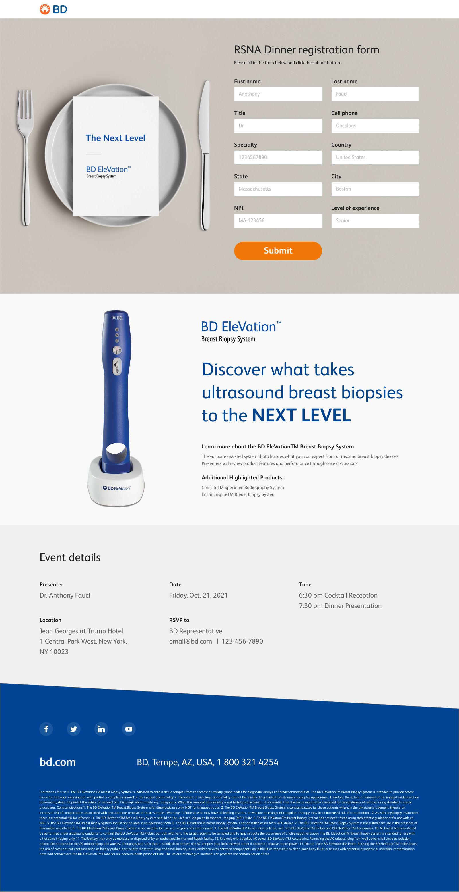
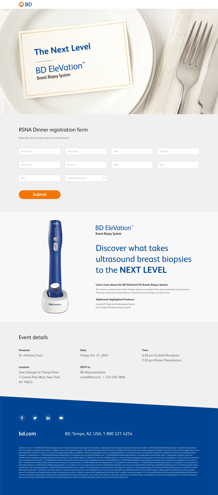
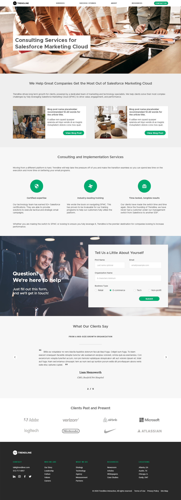
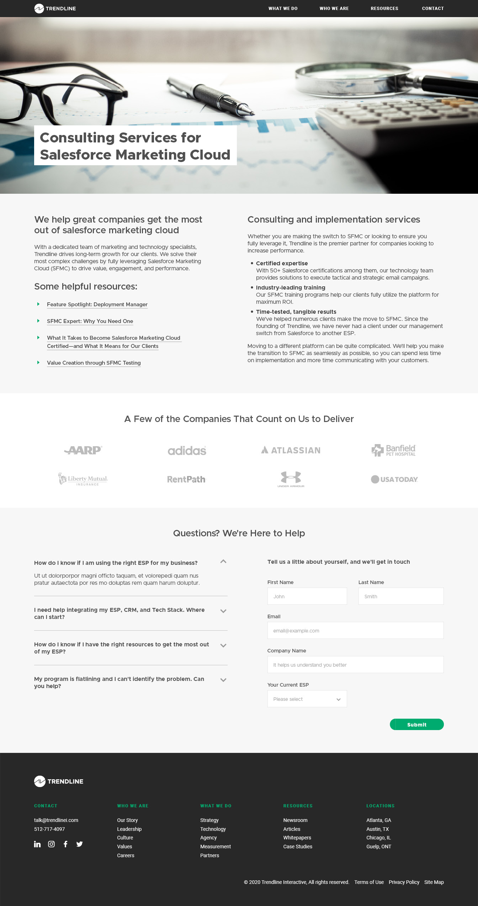
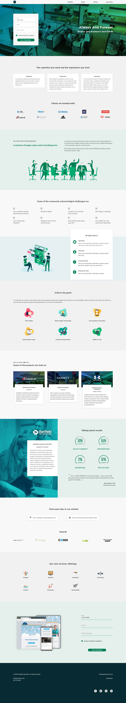
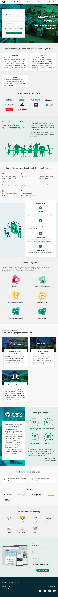
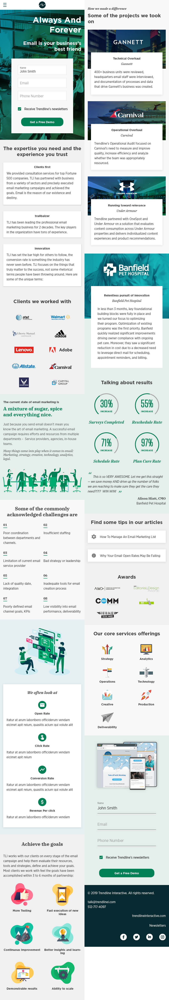
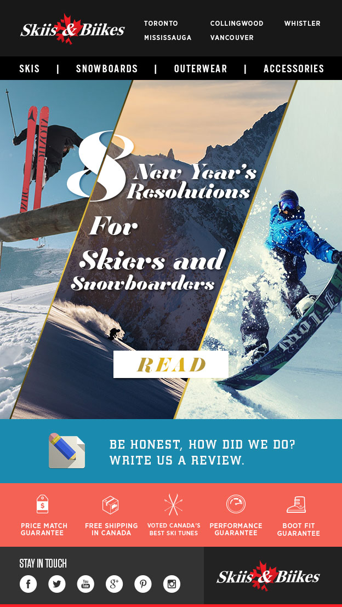
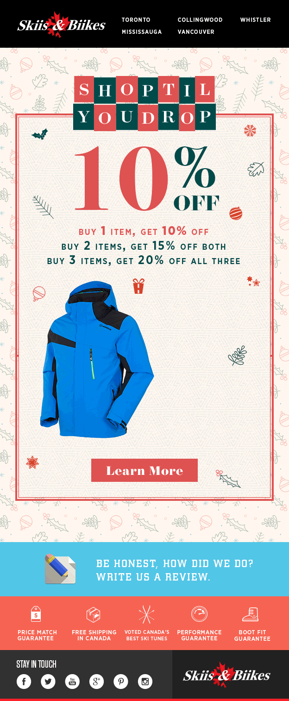
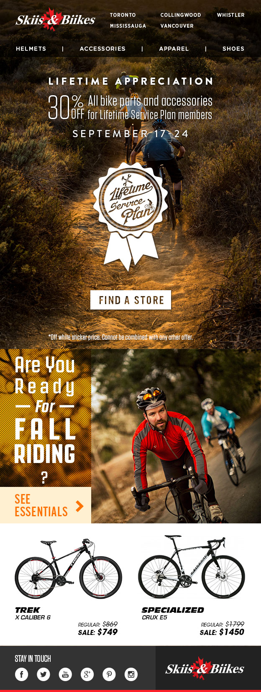
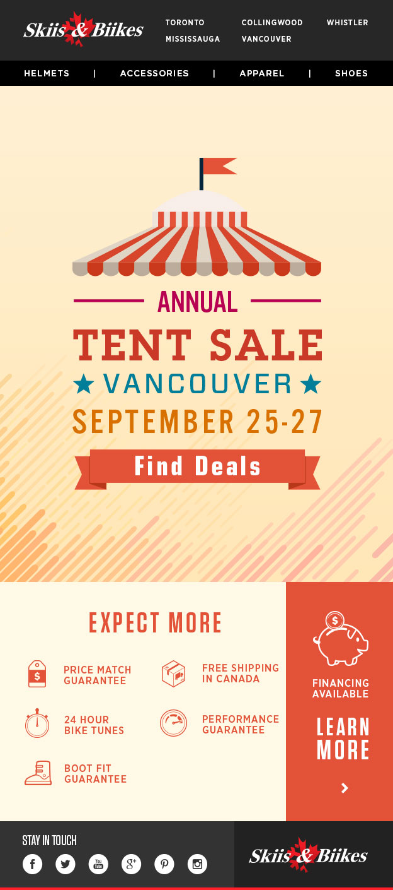
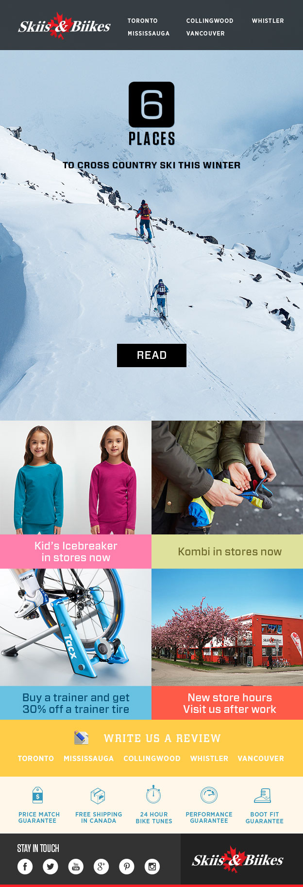
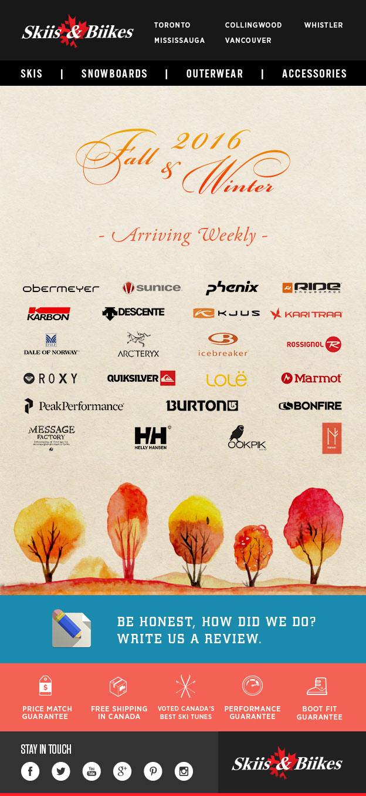
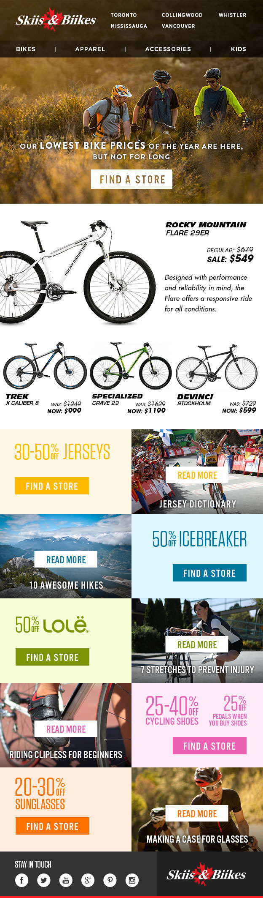
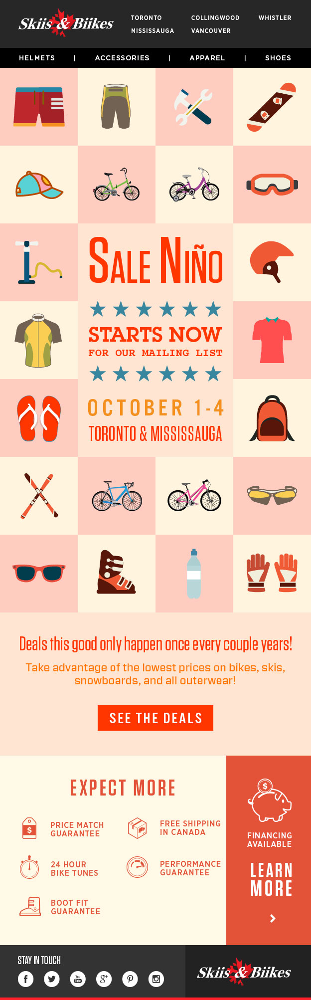
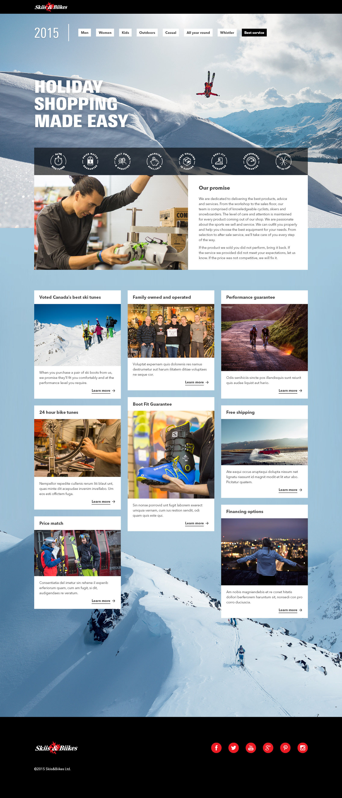
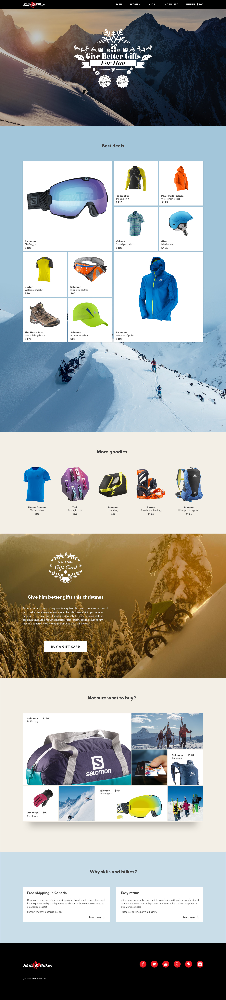
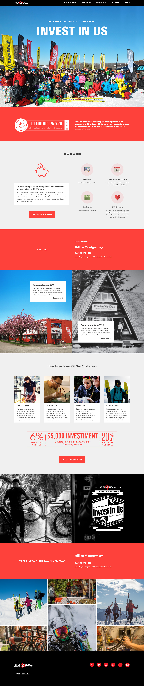
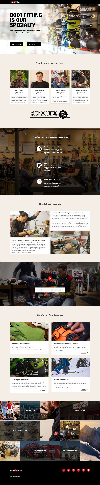